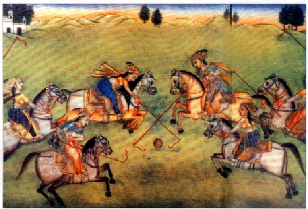
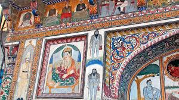
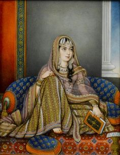
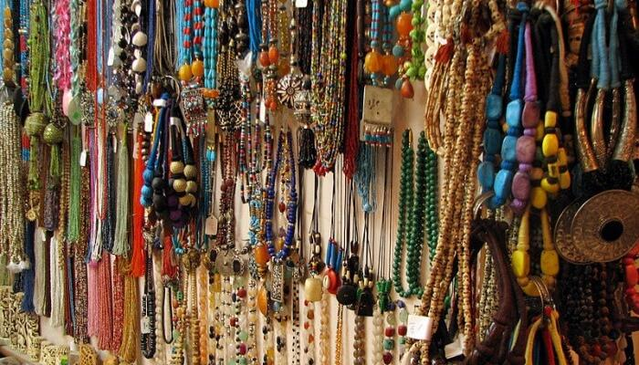
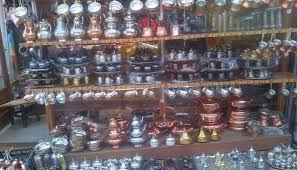
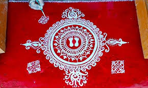
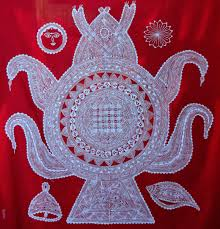
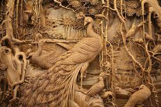
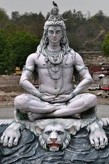
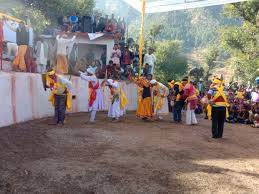

Devabhumi ki Kala
Visual Art Of Uttarakhand

Paintings
Miniature Paining
The Mughal prince Sulaiman Sukoh came here in exile and brought with him painters and the school of the Mughal miniature painting.
Wall Paining
These wall paintings are widely practiced in the Garwhal and Kumaun regions of the state.
Mughal Paining
It has its origin in the exile of Humayun, who brought back wonderful artists from Hirat and Persia to illustrate the splendor of the Mughal courts. By the time of Akbar, who was great patron of arts, the greatness of the Mughal miniature was well established.
Crafts
At the time of Harela, there is a tradition of making clay idols, known as 'Dikaras', in Uttarakhand. Moreover, the crafts of Uttarakhand include woodcrafts, stone carvings, jewelry, and inlaying. Moreover, in Uttarakhand crafts, we can find the influences of the Kumaoni and Tibetan styles.
Aipen
Bindu Aipen, Jyonti Pattas and the Dikara are some of the most popular patterns of Aipen of Uttarakhand. Finely ground rice liquefied with water and using natural paste form the main ingredient for the drawings. The patterns are then laid out, typically against a dark background using bare fingers.
Peeth
Is a sub-genre of Uttarakhand's Aipen. The womenfolk of Kumaon and Garwhal are the main artists of Peeth. It is a part of the widely popular tradition of drawing 'Alpana' at various parts of India to celebrate religious and important social occasions.
Woodcarvings
Woodcrafts at Uttarakhand are designed by the local artistes there.
Stone Carving
Temple architecture of Uttarakhand is the main site of its stone carvings. Most of these temples have big and heavy stone carvings. The powerful and rich kings of Katuyaris, Paun, Chanda and Pawars dynasties of this region patronized the Uttarakhand stone carvings. The stones in the temples exhibit very ornamental and intricate carvings. Baleshwar, Kedarnath, Jageshwar, Bageshwar, Panch Kedar, and Almora showcase some extraordinary stone carvings of Uttarakhand.
Pandav Nritya
It is one of the most famous dance forms of the Garhwal dance forms. Pandav Nritya chiefly belongs to the Chamoli district and the districts of the Pauli Garhwal. Legend has it that the origins of Pandav Nritya at Uttarakhand can be traced back to the period when Pandavas were the rulers of Uttarakhand. Pandav Nritya seems to be almost synonymous with the 'Dussehra' and 'Diwali' of Uttarakhand, because during this time Pandav Nritya performance becomes mandatory. The Baleshwar Temple follows the South Indian school of sculpture and architecture. The temple was built by the first Chand Dynasty king, Raja Somchand. In early 17th century, the Mughals captured Champawat and destroyed the Baleshwar temple. The temple facade is carved out of stone and has arched windows. The architecture is similar to that of Buddhist temple or vihara. The painted facade is typical of the Buddhist temples. The shrine area has an idol of Lord Badrinarayan, carved out of black stone. This idol shows Lord Badrinarayan sitting under a Badri Tree, guarded by a gold canopy.